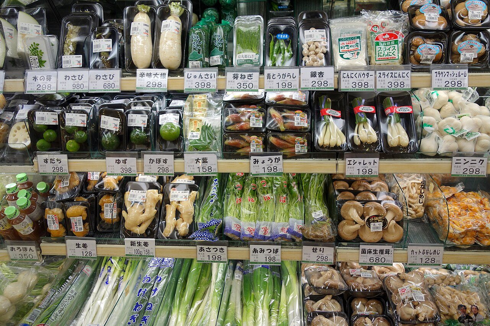
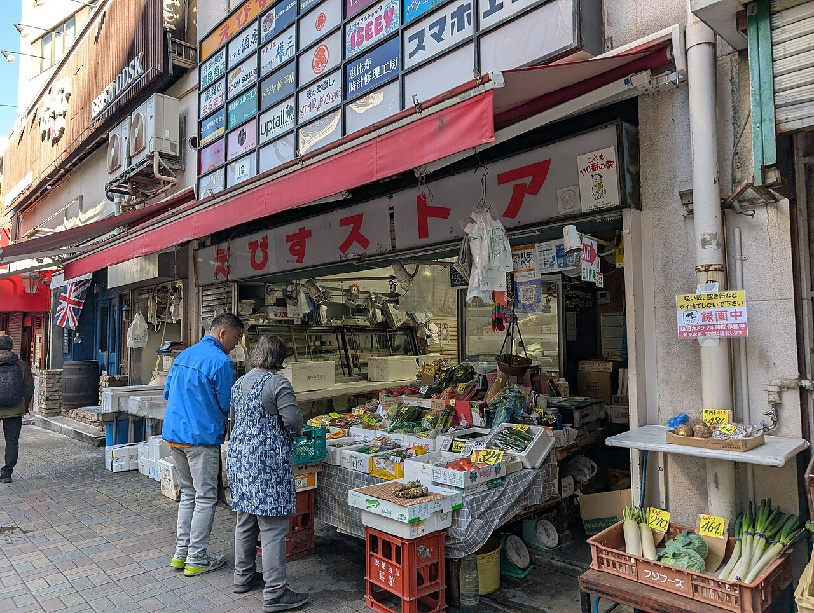
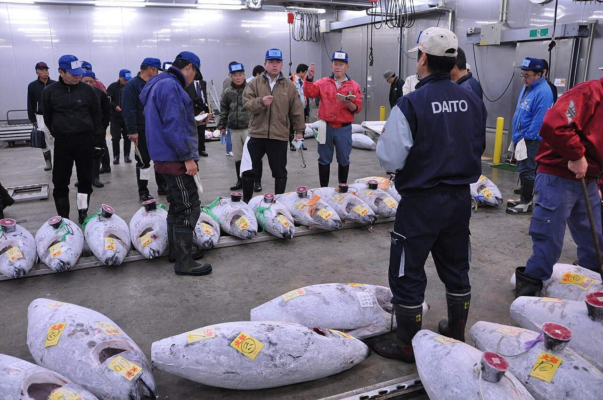
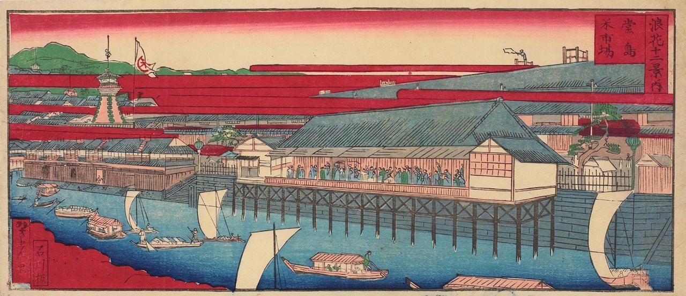
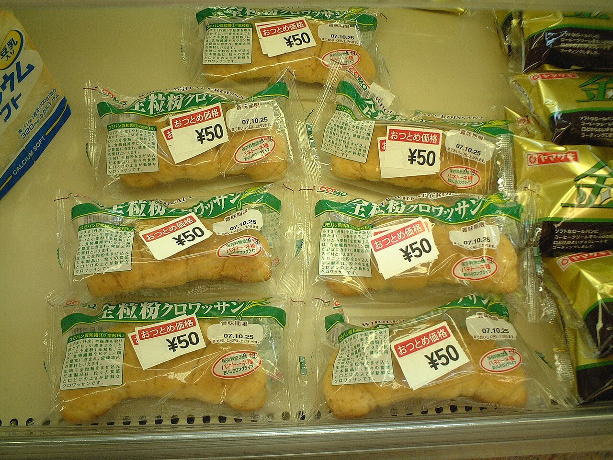
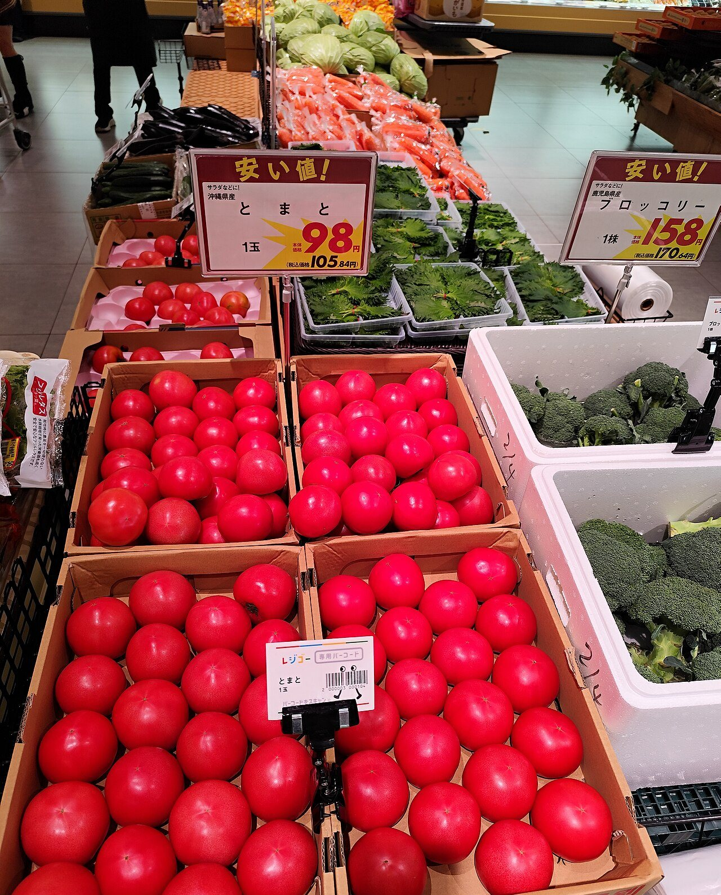
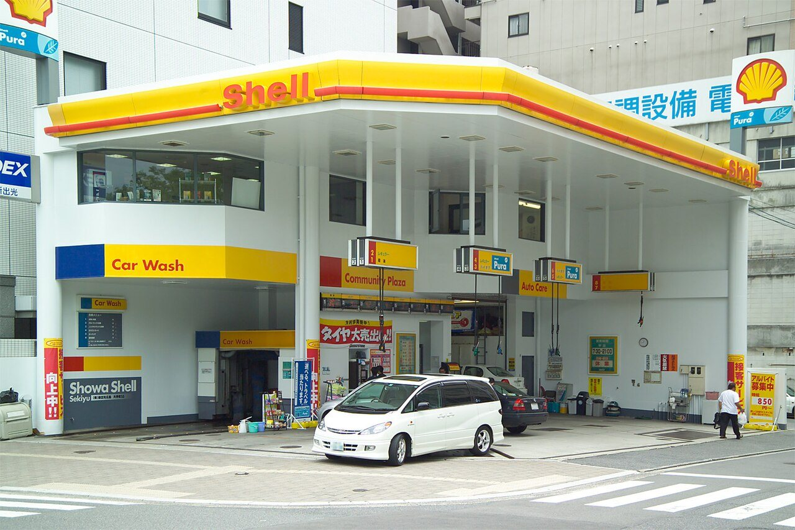

東京・豊洲市場、2026年1月5日の早朝。新年最初の競り（初競り）で、青森県大間でとれた243kgのクロマグロ1本が、5億1030万円で競り落とされました。1kgあたり210万円。記録が残る1999年以降で、いちばんの高値です。
一方で、近所のスーパーのマグロの刺身は、数百円で買えます。同じマグロなのに、なぜこんなに値段が違うのでしょうか。そもそも、店に並ぶ商品の値段は、誰が、どうやって決めているのでしょう。

マグロ1本に5億円の値がつく日もあれば、夕方には同じパンが半額になることもあります。原価、ほしい人と売りたい人の綱引き、買う日による違い、そして「98円」の心理。3つの図で、値札の数字の裏側をのぞいてみませんか。
東京・豊洲市場、2026年1月5日の早朝。新年最初の競り（初競り）で、青森県大間でとれた243kgのクロマグロ1本が、5億1030万円で競り落とされました。1kgあたり210万円。記録が残る1999年以降で、いちばんの高値です。
一方で、近所のスーパーのマグロの刺身は、数百円で買えます。同じマグロなのに、なぜこんなに値段が違うのでしょうか。そもそも、店に並ぶ商品の値段は、誰が、どうやって決めているのでしょう。
かかった費用を下限に、買う人が払ってもいいと思う額を上限にして、ほしい人と売りたい人の数や、買う時期、値札の見せ方によって、その間のどこかに決まるから。
まず思いつくのは、「作るのにかかったお金に、もうけを足す」という決め方です。材料費や人件費、運ぶ費用、店の家賃などをまとめて原価（げんか）と呼びます。原価より安く売り続けると、店は赤字でつぶれてしまいます。
けれども、原価は「これより下げられない」という下限を決めるだけです。いくら費用がかかっても、買う人が「高すぎる」と思えば売れません。値段の上限を決めるのは、買う人が感じる値打ちのほうです。
たとえば同じ缶コーヒーでも、スーパーより自動販売機のほうが高いことがよくあります。いま、すぐそこで冷えたものが買える。その便利さにも、人はお金を払うからです。
実際の店は、近くの店やライバル商品の値段も横目で見ながら、この幅のどこかに値段をつけています。

幅のどこに落ち着くかを大きく動かすのが、需要と供給です。需要は「買いたい人がどれだけいるか」、供給は「売りたいモノがどれだけあるか」。ほしい人が多くてモノが少なければ値段は上がり、その逆なら下がります。ふつう、値段が安いほど買いたい人は増え、高いほど売りたい人は増えます。
このしくみがいちばんむき出しになるのが、競りです。魚や野菜の卸売市場では、買いたい人が値段を声や手ぶりで示し合い、いちばん高い値をつけた人が買います。初競りの5億円は、縁起物として「一番マグロ」を手に入れたい人が競り合った結果でした。

野菜の値段が天気で大きく動くのも、同じ理由です。台風や長雨でキャベツの出荷が減ると、食べたい人の数はほとんど変わらないのに、売りたい量だけが減ります。すると、限られた量を取り合う形になり、値段が上がります。
日本には、この綱引きを早くから市場の形にした歴史があります。江戸時代の大坂（いまの大阪）・堂島には全国の米が集まる米市場があり、18世紀のはじめごろには、まだ手元にない「将来の米」を約束で売り買いする取引も行われていました。世界でも早い時期の先物取引の例として知られています。先の値段を約束しておけば、豊作や不作で米の値段が大きく動いても、損を小さくできたのです。

需要と供給は、日によっても変わります。そこで、売れ行きに合わせて値段を細かく動かす決め方が広がりました。「ダイナミック・プライシング（変動価格制）」と呼ばれます。
先がけは航空会社です。1985年1月、アメリカン航空は、払い戻しができないなどの条件をつけた、大幅な割引運賃を売り出しました。同じ便の同じような座席でも、いつ、どんな条件で買うかで値段が変わる。座席を「空いたまま飛ばす」より、安くしてでも埋めたほうがよいという考え方です。
いまではホテルの宿泊料、テーマパークの入場券、プロ野球の観戦チケットなどでも、日によって値段が変わる方式が広がっています。休日や大型連休は高く、平日は安く。ほしい人の数に合わせて値段が動くのです。

夕方のスーパーで、お惣菜に値引きシールが貼られるのも、同じ考え方です。今日のうちに売れなければ、捨てるしかありません。原価を取り戻せなくても、少しでもお金に換えたほうがまし。値段は、残り時間によっても変わります。
値札をよく見ると、198円、298円、980円と、最後が「8」で終わる値段がたくさんあります。アメリカでは同じように、1.99ドルや39ドルなど「9」で終わる値段がよく使われます。キリのいい数字より、少しだけ安くしているのです。
理由の1つと考えられているのが、左の数字に引っぱられる心のくせです。人は値段を見るとき、左の数字から読みます。2,000円と1,980円の差は20円、わずか1%ですが、「2千円台」と「1千円台」では、ずいぶん違って感じられます。研究者はこれを「左の桁の効果（レフトディジット効果）」と名づけました。
日本で「9」より「8」が好まれる理由には諸説あります。「八」は末広がりで縁起がよい、丸い形がやわらかく見える、などといわれますが、はっきりした答えは出ていません。
値札の工夫はほかにもあります。「通常2,980円→本日1,980円」と元の値段を並べて書くと、最初に見た数字が物差しになり、安さが引き立ちます。人は値段を、その数字だけでなく、何とくらべるかで判断しているのです。

すべての値段が、店と客の綱引きだけで決まるわけではありません。たとえば封書の郵便料金（25g以下の定形郵便物）には、国が上限を決めています。2024年10月の値上げでは、まず総務省がその上限を84円から110円に引き上げ、日本郵便は封書の料金を110円にしました。
消費税の引き上げに伴うものを除くと、約30年ぶりの値上げでした。同時に、はがきも63円から85円になっています。
ガソリンの値段は、原油の値段や為替（円とドルの交換比率）に大きく左右されます。急な値上がりで暮らしが苦しくならないよう、国は2022年1月から、ガソリンを精製して店に卸す石油の元売り会社などに補助金を出し、店頭の値段の上がりすぎを抑えてきました。補助はいったん終わったあと再開されるなど、形を変えながら続けられてきました。
一つひとつの値段がまとまって動くと、「物価」になります。2025年には、日本の物価は1年で3.2%上がりました。値段の決まり方は、私たちの暮らし全体にもつながっているのです。

2,000円と1,980円の、本当の値段の差。それでも「千円台」に見えるだけで、安く感じる第4章の計算による
2024年10月からの、25g以下の封書の料金。それまでは84円2024年10月1日改定。日本郵便の発表による
2025年の1年間に、日本の物価（消費者物価指数の総合）が上がった割合総務省統計局、2026年1月公表
アメリカの研究者エリック・アンダーソンとダンカン・シメスターは、通信販売のカタログを使って実験をしました。同じ女性用の服を、お客さんによって34ドル、39ドル、44ドルと、違う値段で載せたのです。
結果は意外なものでした。いちばん多く売れたのは、いちばん安い34ドルではなく、5ドル高い39ドルだったのです。2003年に発表された論文では、ほかの実験でも、「9」で終わる値段にすると売れ行きが伸びたと報告されています。
9で終わる値段は「お手ごろ価格」の合図として、私たちの頭に刷りこまれているのかもしれません。値段は、原価や需要と供給だけでなく、見る人の心の中でも決まっているのです。
次にスーパーへ行ったら、値札の最後の数字を見てみてください。8で終わる値段と、キリのいい値段。その並び方に、売る人の考えが透けて見えるかもしれません。